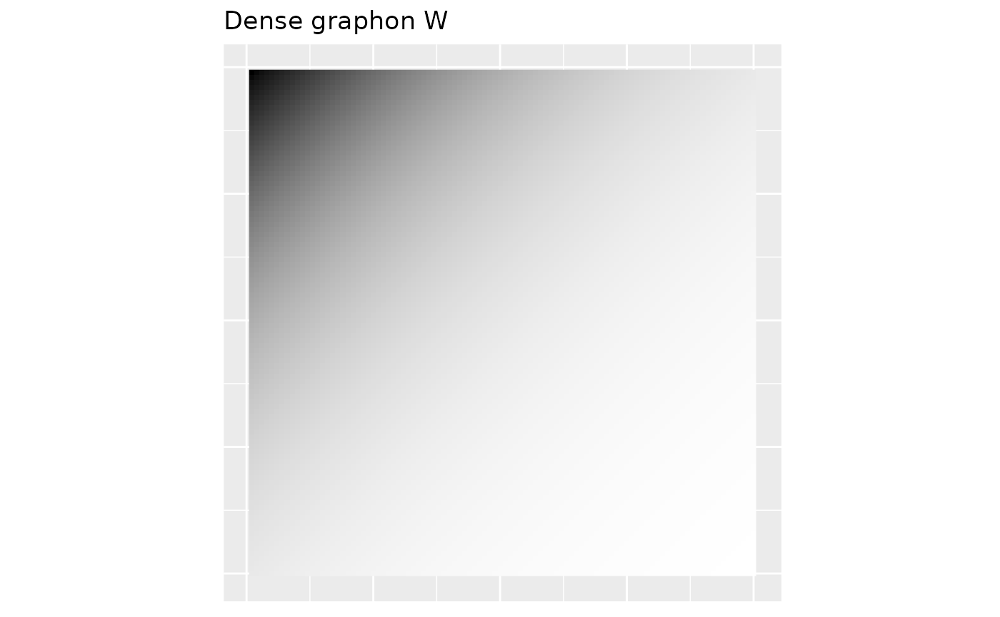
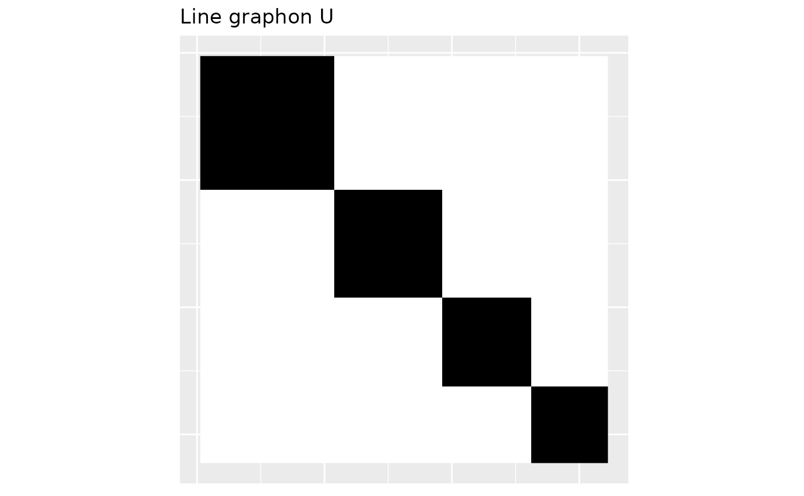
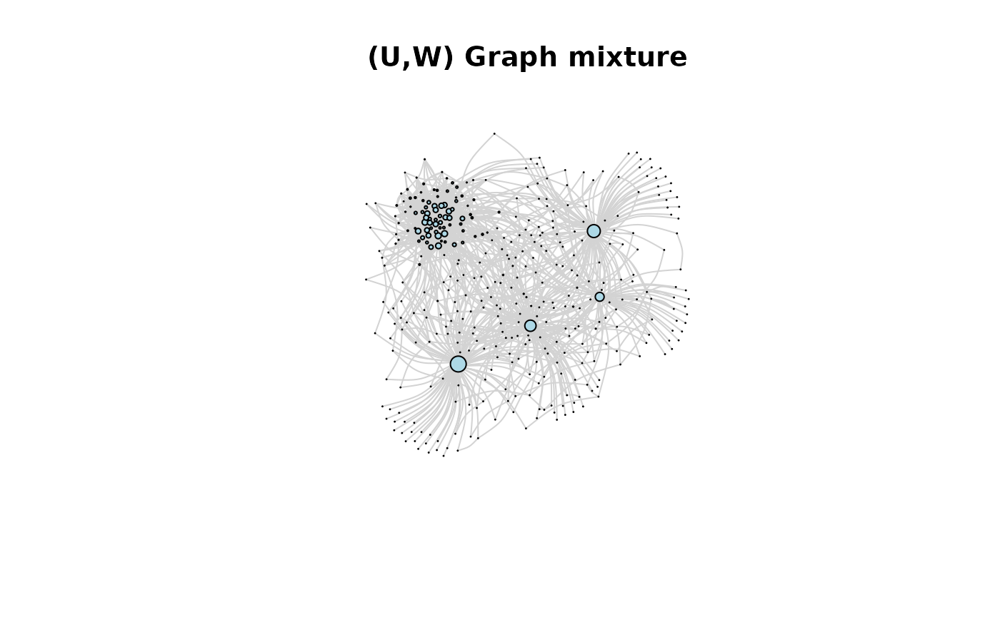
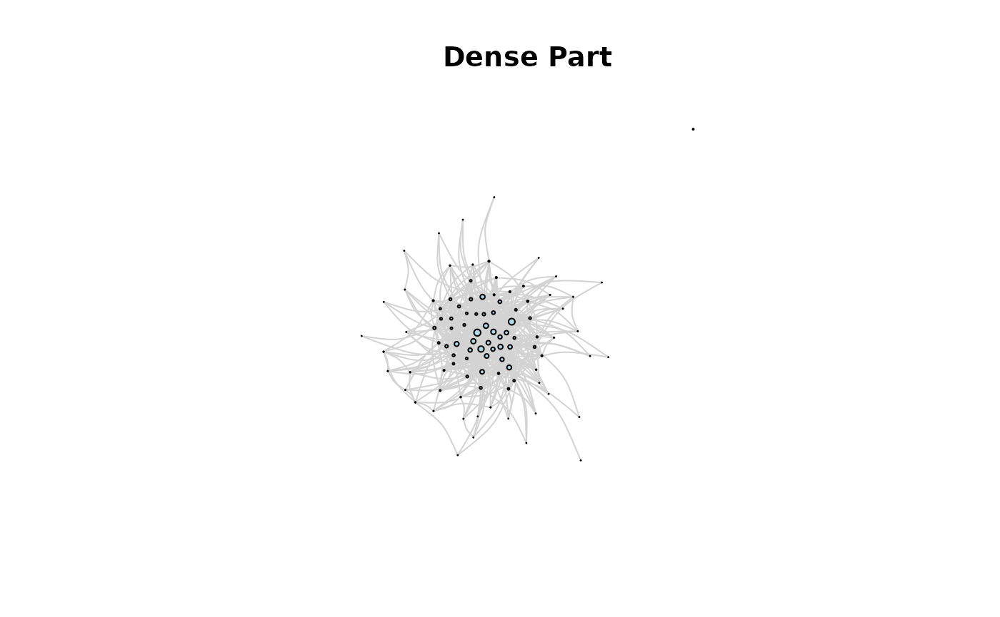
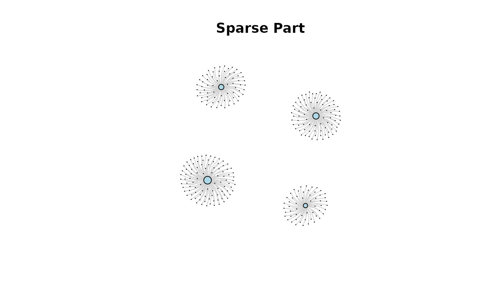
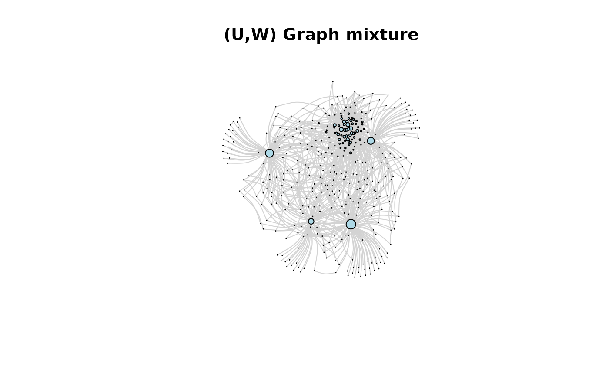
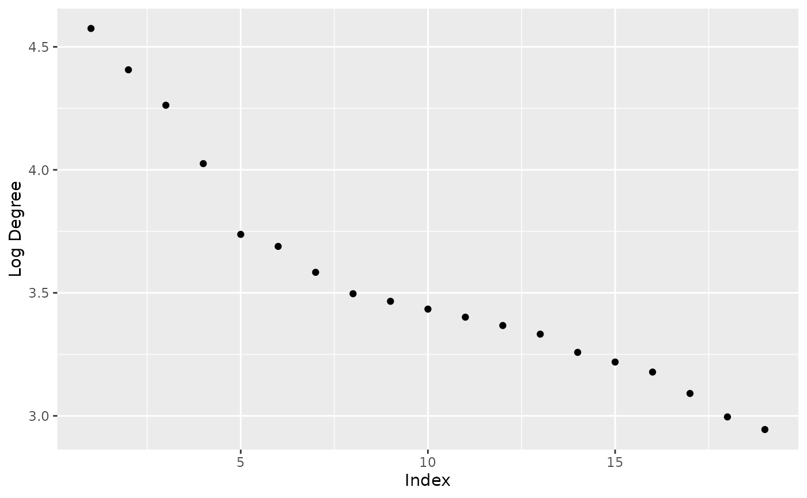
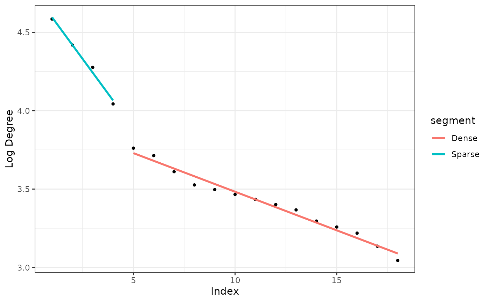
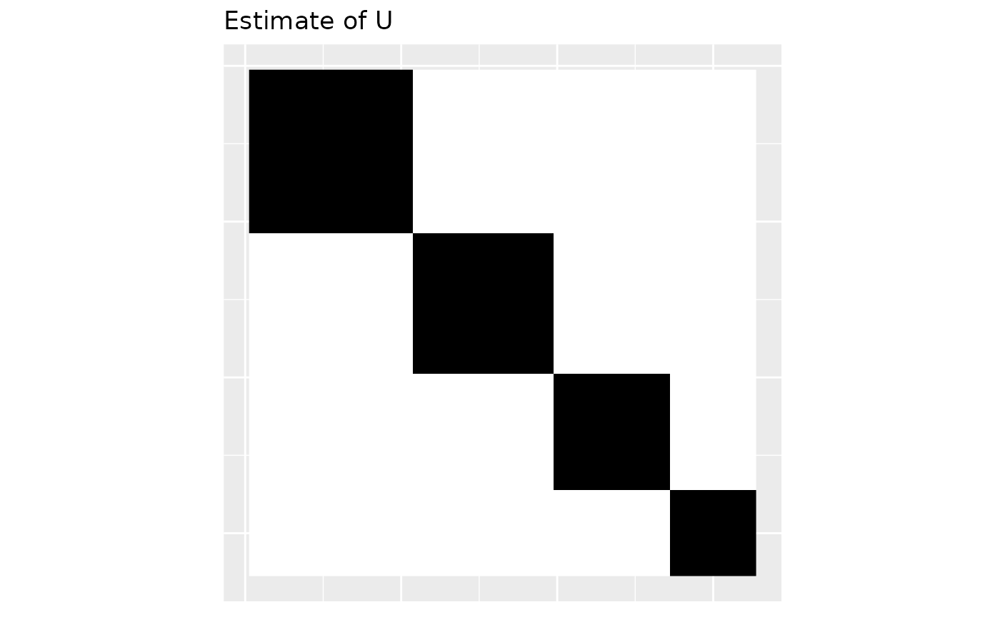

Introduction
graphonmix.Rmd
library(igraph)
#>
#> Attaching package: 'igraph'
#> The following objects are masked from 'package:stats':
#>
#> decompose, spectrum
#> The following object is masked from 'package:base':
#>
#> union
library(graphonmix)
library(ggplot2)(U,W)-mixture graphs
The -mixture graphs are graphs generated from two graphons and . Graphon generates dense graphs and graphon generates sparse graphs. The vignette Line graphs and graphons explains how graphon generates sparse graphs. Once the dense and sparse graphs are generated, nodes are joined randomly. This gives the mixture graph. The methodology is explained in (Kandanaarachchi and Ong 2025).
The two graphons W and U
Let’s plot the two graphons and first.
# create the dense graphon W(x,y) = exp(-(x+y)/40) where x and y ranges from 1 to 100
W <- create_exp_matrix(100, 40)
# plot this graphon
plot_graphon(W) +
coord_fixed(ratio = 1) +
ggtitle("Dense graphon W") 
The graphon above generates the dense part of the graph. The graphon , which we show below generates the sparse part of the graph.
# weights for the sparse part
seq <- 2:5
wts <- (1/1.2^seq)
wts <- wts/sum(wts)
wts
#> [1] 0.3219076 0.2682563 0.2235469 0.1862891
U <- line_graphon(wts)
plot_graphon(U) +
coord_fixed(ratio = 1) +
ggtitle("Line graphon U") 
Generating the mixture graph in one step
Graphon is generated from weights wts in the above piece of code. Given wts and we can generate a mixture graph using the function sample_mixed_graph. We need to specify the number of nodes in the dense part nd and the number of nodes in the sparse part ns. The parameter p gives the proportion of the number of edges added in the joining process. The joining process adds number of edges in dense part to the graph. These edges connect nodes in the dense part to those in the sparse part randomly.
# single function to generate a graph mixture
gr1 <- sample_mixed_graph(W, wts, nd = 100, ns = 300, p = 0.5)
# plot(gr1, vertex.label = NA, vertex.size = 1, main = "(U,W) Graph mixture")
plot(gr1,
edge.curved = 0.3,
vertex.size = degree(gr1)*0.1,
edge.color = "lightgray", # Light colored edges
vertex.label = NA,
vertex.color = "lightblue",
main = "(U,W) Graph mixture"
)
Generating a dense and sparse graph and joining to get the mixture
Or we can generate the dense part and sparse part separately and join them.
# sample dense part and plot it
grdense <- sample_graphon(W, n = 100)
plot(grdense,
edge.curved = 0.3,
vertex.size = degree(grdense) * 0.1,
edge.color = "lightgray", # Light colored edges
vertex.label = NA,
vertex.color = "lightblue",
main = "Dense Part"
)
# sample sparse part and plot it
grsparse <- generate_star_union(wts, n = 300)
plot(grsparse,
edge.curved = 0.3,
vertex.size = degree(grsparse) * 0.1,
edge.color = "lightgray", # Light colored edges
vertex.label = NA,
vertex.color = "lightblue",
main = "Sparse Part"
)
# join the two graphs and plot it
gr2 <- graph_join(grdense, grsparse, p = 0.5)
plot(gr2,
edge.curved = 0.3,
vertex.size = degree(gr2) * 0.1,
edge.color = "lightgray", # Light colored edges
vertex.label = NA,
vertex.color = "lightblue",
main = "(U,W) Graph mixture"
)
Estimating graphon U
If the graph sequence is sparse, then the high degrees of the graph are generated by graphon . These are different from the low degrees. We can see it when we plot the sorted log degrees of the observed graph.
Observing the elbow point in unique log degrees
The graph below plots the sorted unique log degrees of the mixture graph. Notice the elbow point around indices 4 and 5.
degu <- sort(unique(degree(gr2)), decreasing = TRUE)
# we only take the top 1/2 of the unique degree values here to see the effect of the hub nodes clearly
degu <- degu[degu >= median(degu)]
df <- data.frame(
index = 1:length(degu),
log_degree = log(degu)
)
ggplot(df, aes(index, log_degree)) +
geom_point() +
xlab("Index") +
ylab("Log Degree") 
Let us check the degrees of the dense part and the sparse part and compare it with the degrees of the mixture graph
deg_dense <- sort(unique(degree(grdense)), decreasing = TRUE)
deg_dense
#> [1] 41 39 36 31 30 29 28 26 25 24 21 19 18 17 16 15 14 13 12 11 10 9 8 7 6
#> [26] 5 4 3 2 1 0
deg_sparse <- sort(unique(degree(grsparse)), decreasing = TRUE)
deg_sparse
#> [1] 96 80 67 55 1
deg_mix <- sort(unique(degree(gr2)), decreasing = TRUE)
deg_mix
#> [1] 97 82 71 56 42 40 36 33 32 31 30 29 28 26 25 24 22 20 19 18 17 16 15 14 13
#> [26] 12 11 10 9 8 7 6 5 4 3 2 1Of course the graph joining process increases the degrees of some nodes because nodes are joined by the additional edges. See how only a small number of nodes in the sparse part have degrees greater than that of the dense part.
Detecting the elbow point and estimating
From the mixture graph we can identify the sparse part. We do this by finding the elbow point of the log degree graph shown above. The function extract_sparse does the job.
out <- extract_sparse(gr2)
out$num_hubs
#> [1] 4
# Estimate of the mass-partition
out$phat
#> [1] 0.3169935 0.2679739 0.2320261 0.1830065
# Actual mass partition
wts
#> [1] 0.3219076 0.2682563 0.2235469 0.1862891The estimated mass-partition is given in out$phat in the above code. The estimate is close to the actual mass partition given by wts.
We can see the elbow point of the unique log degree graph with autoplot.
autoplot(out)
Now that we have estimated the weights (mass-partition) we can plot the estimated graphon .
Uhat <- line_graphon(out$phat)
plot_graphon(Uhat) +
coord_fixed(ratio = 1) +
ggtitle("Estimate of U") 